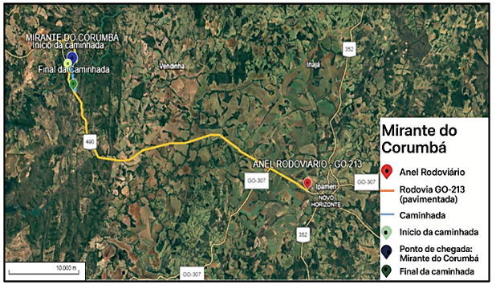
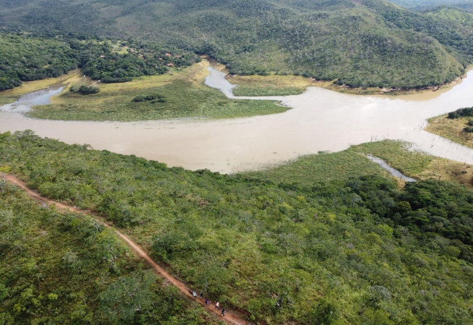
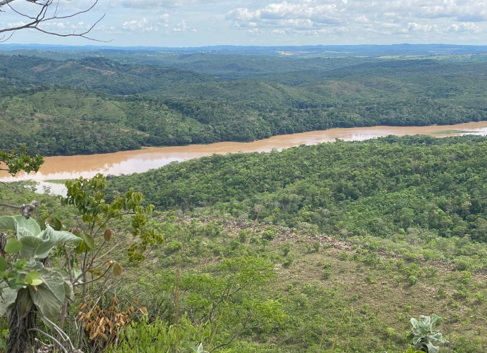
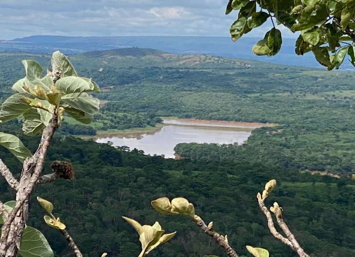
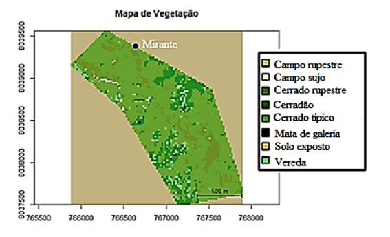

Mirante do Corumbá
O Mirante do Corumbá é reconhecido como um dos pontos mais procurados por apreciadores da natureza e contemplação da paisagem natural no município de Ipameri-GO, destacando-se por proporcionar uma vista privilegiada das formações típicas do bioma Cerrado, com campos, matas e afloramentos rochosos compondo um cenário de grande valor ambiental e paisagístico. O local tem atraído, não apenas moradores da região, mas também visitantes de outras localidades interessados em atividades de observação da natureza e práticas de lazer ao ar livre.
Embora seja um atrativo natural importante, o Mirante do Corumbá está situado a 40,5 km do centro de Ipameri-GO. A trilha tem uma extensão total de 3,91 km e leva cerca de 1 hora e 30 minutos para ser percorrida. Seu percurso é considerado de nível difícil, o que restringe, em parte, a visitação a pessoas que estejam preparadas para percursos em trilhas mais exigentes. O trajeto até o mirante não permite o acesso completo por veículos motorizados; os visitantes devem deixar seus carros estacionados às margens da rodovia GO-213 (iniciando a caminhada em um ponto e terminando em outro), em áreas improvisadas e sem estrutura formal, seguindo por trilhas realizadas a pé.
A Tabela 1 apresenta a extensão total do percurso (cerca de 39,5 km, com partida do anel rodoviário - GO 213), de acordo com cada via.
| Tipo de via | Distância |
|---|---|
| Rodovia GO-213 – pavimentada | 39,51 km |
| Caminhada | 3,91 km |
Ao longo da trilha, o terreno é caracterizado por declives acentuados, irregularidades naturais e superfícies arenosas ou pedregosas, que tornam o deslocamento mais lento e exigem maior cuidado e preparo físico dos visitantes, principalmente em períodos chuvosos, quando as condições se tornam ainda mais desafiadoras.
Atenção e Recomendações
- Diante dessas características, recomenda-se que o percurso seja realizado com acompanhamento de guia e supervisão constante, especialmente quando envolve grupos de estudantes com menor maturidade, em razão da altitude do local e dos riscos associados.
- Não há necessidade de vestimentas especiais, recomendando-se o uso de roupas leves para trilha, sapatos fechados, protetor solar e repelente.
- Ressalta-se ainda a importância do recolhimento e descarte correto do lixo, contribuindo para a preservação do ambiente natural.
- Para fins educativos, aconselha-se a limitação do número de participantes por grupo, preferencialmente até 30 estudantes, com indicação para alunos do Ensino Médio ou níveis equivalentes ou superiores, acompanhados por professores ou responsáveis, de modo a assegurar a segurança, o controle do grupo e a qualidade da experiência pedagógica.
Mesmo diante das dificuldades de acesso, o esforço é recompensado pela paisagem singular que se descortina no topo do mirante, oferecendo uma vista ampla das áreas de preservação e da vegetação típica da região, reforçando o potencial do local para atividades de lazer associadas à contemplação ambiental e à valorização dos recursos naturais do Cerrado.
A Figura 1 mostra uma imagem de satélite da região e do trajeto completo da Trilha o Mirante do Corumbá.

O principal atrativo da Trilha do Mirante do Corumbá é, sem dúvida, sua beleza cênica única, que proporciona ao visitante uma experiência visual marcante e diferenciada, com amplas vistas panorâmicas das paisagens naturais que compõem o bioma Cerrado. Oferece uma conexão direta com a natureza, permitindo a observação de formações vegetais preservadas, áreas de campo aberto, manchas de matas densas, além de afloramentos rochosos e veredas que enriquecem a paisagem e reforçam o caráter ecológico da trilha.
O local tem um enorme potencial para ser utilizado para atividades recreativas e de lazer, sobretudo por pessoas que valorizam práticas de ecoturismo, caminhadas ecológicas, observação da fauna e da flora. Isso poderia atrair fotógrafos amadores e profissionais, pesquisadores e grupos interessados em atividades educativas, ligadas à Geografia, Biologia e Conservação Ambiental, além da simples contemplação da natureza em sua forma mais bruta e preservada. As paisagens oferecidas pela trilha, compostas por mosaicos naturais do Cerrado, evidenciam os aspectos estéticos, ecológicos e científicos da região, possibilitando a implementação de práticas focadas na construção do conhecimento e na preservação do bioma.
Trata-se de um ambiente que favorece momentos de introspecção, bem-estar e descanso, ao proporcionar silêncio, ar puro e vistas amplas de horizontes verdes, elementos cada vez mais valorizados por aqueles que buscam refúgio das rotinas urbanas e contato com áreas naturais.
Dessa forma, o Mirante do Corumbá cumpre um papel importante como espaço de valorização do meio ambiente, promovendo o turismo sustentável e o contato responsável com as riquezas naturais do Cerrado, reforçando sua relevância como atrativo regional para lazer e educação ambiental.

A Tabela 2, apresenta os dados referentes à vegetação predominante na região nos anos de 2016 e 2024.
| Ano | Campo rupestre | Campo sujo | Cerrado rupestre | Cerradão | Cerrado típico | Mata de galeria | Solo exposto | Vereda |
|---|---|---|---|---|---|---|---|---|
| 2016 | 0,04% | 3,97% | 29,34% | 2,56% | 10,31% | 0,26% | 53,03% | 0,45% |
| 2024 | 0,02% | 0,25% | 5,26% | 6,80% | 32,65% | 0,13% | 53,03% | 1,81% |
A vegetação predominante ao longo da Trilha 2 é composta, principalmente, pelas formações conhecidas como Cerrado típico e Cerradão, representados nas figuras 3 e 4, que se destacam por sua ampla cobertura e por representarem as fitofisionomias mais expressivas da região ao longo dos anos analisados.
A composição vegetal da trilha revela um ambiente de alta diversidade ecológica, típico do bioma Cerrado, com diferentes formas de vegetação coexistindo e contribuindo para a complexidade ambiental e paisagística da região.


A Figura 5 mostra o mapa de cobertura vegetal da área da Trilha do Mirante do Corumbá para o ano de 2024.

O percurso a ser percorrido apresenta formações vegetais nativas do Cerrado em diferentes estágios de conservação e regeneração, incluindo áreas de Cerrado típico, Cerradão e trechos com vegetação mais esparsa, onde o solo exposto e as rochas predominam cerca de 50% da área analisada.
3.2.1 Interpretação das Mudanças na Vegetação (2016–2024)
O Cerrado típico, caracterizado por árvores esparsas, arbustos retorcidos e gramíneas predominantes no sub-bosque, apresentou um crescimento até 2024 superior a 20% ao longo desses nove anos. Sua expansão para áreas mais amplas indica um processo contínuo de regeneração e adensamento da vegetação nativa. O Cerradão, por outro lado, também registrou um leve aumento de 4% e permaneceu como a segunda vegetação predominante da área, apresentando uma estrutura mais densa e arbórea, com vegetação de maior porte e cobertura contínua, formando manchas que se alternam com as demais fitofisionomias e fortalecem a diversidade ambiental do local.
Além dessas formações predominantes, a área da trilha abriga ainda outros tipos de vegetação que contribuem para a heterogeneidade e complexidade ecológica do ambiente, como as áreas de Campo rupestre e Campo sujo, que aparecem em trechos mais elevados ou em solos rasos e pedregosos, com vegetação herbácea e arbustiva de baixa densidade. Essas áreas desempenham um papel importante na conservação da biodiversidade local, abrigando espécies adaptadas às condições mais severas do Cerrado.
Outro componente importante é o Cerrado rupestre, que apresenta características intermediárias, com vegetação mais esparsa e presença de afloramentos rochosos, associado frequentemente às áreas de relevo mais acidentado da trilha, onde houve uma redução significativa de 24%.
Também são notáveis as pequenas áreas que, ao longo dos anos, sofreram redução na Mata de galeria, que segue os cursos d’água e forma corredores ecológicos essenciais fundamentais para a manutenção da umidade do solo, da fauna e da flora, além de auxiliarem na proteção dos recursos hídricos.
Por fim, a presença das Veredas, associadas às áreas de solos hidromórficos e ao surgimento de nascentes, completa esse mosaico de vegetação, evidenciando a riqueza ecológica do local. Embora ocupem áreas menores, esses ambientes tiveram um leve aumento percentual e são fundamentais para a biodiversidade, servindo como habitats estratégicos para várias espécies de fauna e flora adaptadas a essas condições particulares.
Vale ressaltar que algumas diferenças e variações nas fitofisionomias podem ser notadas, as quais podem ser atribuídas às limitações do modelo utilizado na classificação da vegetação, que nem sempre é totalmente preciso.